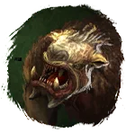
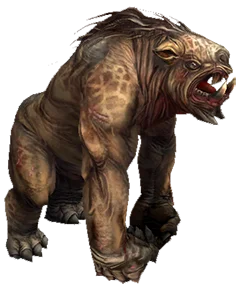

Открыть в интерактивной вики →

| Уровень | 80 |
|---|---|
| Прокачка | есть |
| Ранг в стае | 10 |
| Здоровье | 2400 |
| Мана | 1000 |
| Выносливость | 1800 |
| Статистика | Уровень: 80, ранг: 10, здоровье: 2400, мана: 1000, выносливость: 1800 |
Цена

Где взять
Покупается в Клетке гильдий 3
Выкуп
Выкуп за смерть:
10х Платина либо откат 4 часа
Платина либо откат 4 часа
10х
Платина либо откат 4 часаНавыки


Скины
Доп. информация
Требуемый уровень: 80
Цена: 3 000 000 золота и 400 платины
Покупка: III гильдейская клетка
Может получать опыт — ДА
Описание
 | Тлук забьёт любого, кто встанет у тебя на пути. Его кривые зубы оставляют глубокие раны и вызывают сильное кровотечение. Огромная выносливость делает его отличным спутником, особенно для персонажей дальнего боя. Атакует физически и ментально. Использует: Твоя старуха, Рёв, Укус, Фронт-кик, Болезненный удар, Ярость. | |